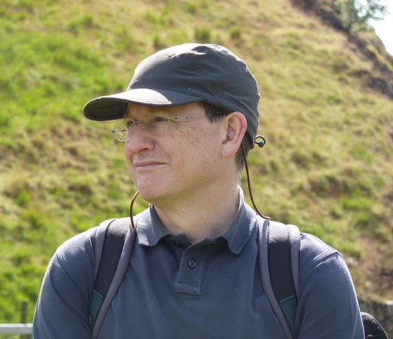
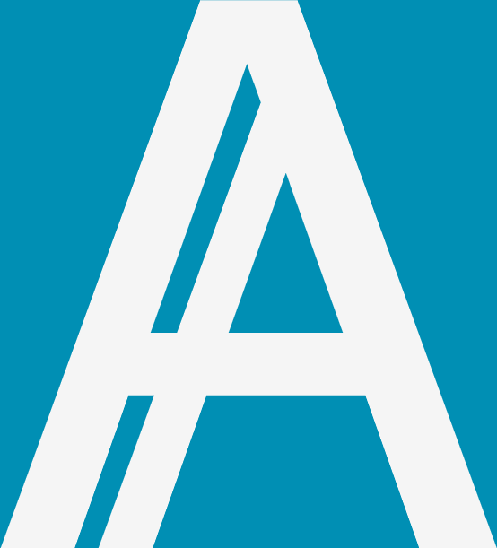
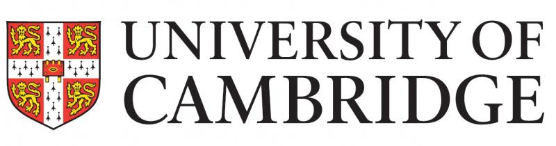

|  | |
| A Workshop Celebrating the Career of | |
 N DREW PIT TS | |
| Computer Laboratory, Cambridge, UK | |
| 22-23 August 2023 | |
Andrew Pitts is Professor of Theoretical Computer Science in the University of Cambridge, having joined the Computer Laboratory as a Lecturer in 1989. He holds a PhD in Mathematics, also from Cambridge, and is a Fellow of Darwin College. His early research interests were in applications of category theory in logic and mathematical foundations; from around 1985 onwards these turned to applications in the semantics of programming languages. His work in theoretical computer science has ranged over category theory, constructive logic, type theory, programming language semantics, and the design and implementation of metaprogramming languages. Prof. Pitts is an ACM Fellow and a recipient of the Alonzo Church Award for Outstanding Contributions to Logic and Computation.
Through his career Andy has supervised twelve doctoral students, published research with dozens of collaborators, and inspired many more with his gentle and persuasive instruction. Always generous with fresh ideas, his far-sighted intuition and enthusiasm has guided the community in innovative research for over four decades.
We are delighted to invite the community to participate in this workshop as a celebration of Andy's research and long career, with talks to be given by a wide range of his students, colleagues and collaborators. All are welcome to attend, and we ask that participants register using the form below.
Talks are by invitation only.
| Time | Tuesday 22 August | Wednesday 23 August |
|---|---|---|
| 09:00–09:30 | REGISTRATION AND COFFEE | |
| 09:30–10:00 | Bas Spitters | Nick Benton |
| 10:00–10:30 | Glynn Winskel | Paul Taylor |
| 10:30–11:00 | Ieke Moerdijk | Peter Dybjer |
| 11:00–11:30 | BREAK | BREAK |
| 11:30–12:00 | Jamie Gabbay | Peter Johnstone |
| 12:00–12:30 | Larry Paulson | Peter Sewell |
| 12:30–13:00 | Lars Birkedal | Ranald Clouston |
| 13:00–13:30 | LUNCH | LUNCH |
| 13:30–14:00 | ||
| 14:00–14:30 | Marcelo Fiore | Rasmus Mogelberg |
| 14:30–15:00 | Maribel Fernandez | Roy Crole |
| 15:00–15:30 | Mark Shinwell | Sam Steenkamp |
| 15:30–16:00 | BREAK | Samson Abramsky |
| 16:00–16:30 | Matt Lakin | Afternoon reception, Computer Laboratory |
| 16:30–17:00 | Matthew Parkinson | |
| 17:00–17:30 | Mike Fourman | |
| EVENING | Celebration banquet, Churchill College. Please purchase a ticket via the registration form. |
Registration is not yet open.
There will be a celebration banquet
